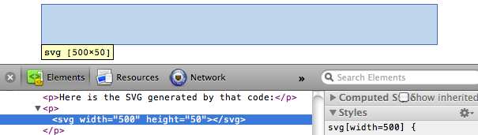

D3 наиболее полезен, когда используется для создания и манипулирования визуальными образами на основе SVG. Рисование с использованием div'ов и других HTML-элементов возможно, но немного неуклюже, и обычно появляются несоответствия отображения в различных браузерах. Использование SVG более надежно, визуально последовательно и быстрее.
Редакторы векторной графики, такие как Illustrator, могут быть использованы для создания SVG-файлов, но нам необходимо научиться создавать их с помощью кода.
Scalable Vector Graphics(масштабируемая векторная графика) - формат изображений на основе текста. Каждое SVG-изображение определено с использованием разметки кода, похожей на HTML. SVG-код может быть включен напрямую в HTML-документ. Каждый веб-браузер поддерживает SVG, исключением является только Internet Explorer версии 8 и старше. SVG основан на XML, поэтому вы можете заметить, что элементы, не имеющие закрывающего тега, должны быть самозакрывающимися. Например:
<element></element> <!-- Uses closing tag --> <element/> <!-- Self-closing tag -->
Перед тем как вы сможете что-нибудь рисовать, вам надо создать SVG-элемент. Думайте об SVG-элементе, как о холсте, на котором отрисовываются все ваши визуальные образы(В такой трактовке, SVG концептуально схож с элементом HTML - canvas). Как минимум, хорошо задать ширину и высоту с помощью атрибутов width и height, соответственно. Если вы их не зададите, SVG растянется на всю площадь блока.
<svg width="500" height="50"> </svg>
Здесь SVG-элемент, созданный с использованием кода выше:
Не видите его? Нажмите правой кнопкой по пустому месту выше и выберите "Просмотр кода элемента". Ваш веб-инспектор должен показать что-то похожее:
Заметьте, что тут есть SVG-элемент, который занимает 500 пикселей по горизонтали и 50 пикселей по вертикали.
Также заметьте, что браузеры считают пиксели единицей измерения по умолчанию. Мы указали размеры как 500 и 50, а не 500px и 50px. Мы можем указать px явно, или любую другую единицу измерения, например: em, pt, in, cm, и mm.
Существует некоторый набор фигур, которые вы можете поместить внутрь элемента SVG. Этот набор включает: rect, circle, ellipse, line, text и path.
Если вы знакомы с программирование компьютерной графики, вы вспомните, что обычно координатная система на основе пикселей начинается с левого верхнего угла и имеет координаты точки (0,0). Увеличение х происходить слева направо, увеличение у-сверху вниз.
rect рисует квадрат. Квадрат задается четырьмя значениями: x, y - указывают точку верхнего левого угла; width, height - указывают ширину и высоту квадрата. Этот квадрат занимает все пространство нашего SVG:
<rect x="0" y="0" width="500" height="50"/>
circle рисует круг. Круг задается тремя величинами: cx, cy указывают точку, расположенную в центре описываемой окружности, r задает радиус круга. Этот круг расположен в центре нашего SVG, потому что атрибут cx("center-x") равен 250. Пример:
<circle cx="250" cy="25" r="25"/>
ellipse задается схоже с circle, но предполагается, что радиус задается по двум осям: по х и по у. Вместо х используйте rx, вместо y - ry.
<ellipse cx="250" cy="25" rx="100" ry="25"/>
line рисует линию. Используйте x1 и y1 для задания координат начала линии, и x2 и y2 для задания координат конца. Атрибут stroke должен задавать цвет линии, иначе она будет невидимая.
<line x1="0" y1="0" x2="500" y2="50" stroke="black"/>
text отрисовывает текст. Используйте x, чтобы указать левый край, и y, чтобы указать вертикальную позицию так называемой базовой линии.
<text x="250" y="25">Easy-peasy</text>
текст будет наследовать CSS-стили шрифта родительского элемента, если только вы не зададите свои стили для текста. Обратите внимание, как форматирование текста выше совпадает с текстом, описываемом в этом параграфе. Мы может переопределить стили форматирования так:
<text x="250" y="25" font-family="sans-serif" font-size="25" fill="gray">Easy-peasy</text>
Также заметьте, когда любой визуальный элемент упирается в границу SVG-элемента, он будет обрезан. Будьте осторожны, когда используете text, чтобы ваши загагулины у текста не были обрезаны. Вы можете увидеть, что случится с текстом, если выставить baseline (то есть у) равным 50, такую же, как высота SVG:
<text x="250" y="50" font-family="sans-serif" font-size="25" fill="gray">Easy-peasy</text>
path рисует что-нибудь более сложное, чем фигуры, описанные выше(например, силуэт стран на геокартах), и будет описан отдельно. А теперь мы будем работать с простыми фигурами.
По умолчанию любой элемент SVG имеет черную заливку и не имеет рамку. Если вы хотите что-то сверх этого, вам придется применить стили к вашему элементу. Общие SVG свойства перечислены ниже:
С text также можно использовать следующие свойства:
Существует два способа применения стилей к SVG-элементам: либо напрямую прописывать стили внутри элемента как его атрибуты, или через правила CSS.
Ниже некоторые CSS-свойства заданы непосредственно в элементе circle:
<circle cx="25" cy="25" r="22" fill="yellow" stroke="orange" stroke-width="5"/>
По-другому мы могли бы сделать так: не прописывать атрибуты стиля, а указать класс стилей(также как и обычному HTML элементу):
<circle cx="25" cy="25" r="22" class="pumpkin"/>
а потом добавить fill, stroke и stroke-width параметры в CSS-стили необходимого класса:
.pumpkin {
fill: yellow;
stroke: orange;
stroke-width: 5;
}
Второй подход имеет несколько очевидных преимуществ:
Использование CSS для применения стилей к SVG, однако, может кого-то привести в замешательство. fill, stroke, stroke-width все-таки не CSS-свойства(ближайшие CSS-эквиваленты это background-color и border). Чтобы помочь вам запомнить, какие правила в таблице стилей указаны для SVG-элементов, желательно включать svg в CSS-селектор:
svg .pumpkin {
/* ... */
}
В SVG нет как таковых слоев и никакого понятия глубины. SVG не поддерживает CSS-свойство z-index, таким образом фигуры могут быть упорядочены в рамках двухмерного пространства.
И еще, если нарисовать несколько фигур, то они перекрываются:
<rect x="0" y="0" width="30" height="30" fill="purple"/> <rect x="20" y="5" width="30" height="30" fill="blue"/> <rect x="40" y="10" width="30" height="30" fill="green"/> <rect x="60" y="15" width="30" height="30" fill="yellow"/> <rect x="80" y="20" width="30" height="30" fill="red"/>
Порядок, в котором элементы указаны в коде, определяет их глубину. Фиолетовый квадрат указан в коде первым, поэтому первым он и отрисовывается. Дальше рисуется синий квадрат над фиолетовым, дальше зеленый над синим и фиолетовым и т.д.
Думайте так, будто SVG-фигуры рисуются на холсте. Цвет, который применяется позже всех, закрашивает остальные цвета, оказываясь "впереди".
Этот аспект рисования порядка становится важным, когда у вас есть несколько визуальных элементов, которые не должны быть ничем перекрыты. Например, у вас могут быть оси или метки значений на осях, которые появляются на диаграмме рассеивания. Оси и метки должны быть добавлены в SVG в конце, чтобы они появились перед остальными элементами и были видны.
Прозрачность может быть полезна, когда элементы вашей визуализации пересекаются, но должны быть видимыми все, или когда вы хотите выделить одни элементы, но при этом сделать более незаметными другие.
Существует два способа применить прозрачность: использовать RGB-цвет с альфа-каналом или установить свойству opacity числовое значение.
Вы можете использовать rgba() везде, где надо указать цвет, например в атрибутах fill и stroke. rgba() ожидает, что вы передадите ему 3 значения в промежутке от 0 до 255 для красного, зеленого и синего, плюс альфа-канал(прозрачность) в диапазоне от 0.0 до 1.0.
<circle cx="25" cy="25" r="20" fill="rgba(128, 0, 128, 1.0)"/> <circle cx="50" cy="25" r="20" fill="rgba(0, 0, 255, 0.75)"/> <circle cx="75" cy="25" r="20" fill="rgba(0, 255, 0, 0.5)"/> <circle cx="100" cy="25" r="20" fill="rgba(255, 255, 0, 0.25)"/> <circle cx="125" cy="25" r="20" fill="rgba(255, 0, 0, 0.1)"/>
Заметьте, что с методом rgba(), прозрачность применяется к fill и stroke атрибутам независимо. Заливка следующих кругов на 75% прозрачна, а их рамка - на 25%:
<circle cx="25" cy="25" r="20" fill="rgba(128, 0, 128, 0.75)" stroke="rgba(0, 255, 0, 0.25)" stroke-width="10"/> <circle cx="75" cy="25" r="20" fill="rgba(0, 255, 0, 0.75)" stroke="rgba(0, 0, 255, 0.25)" stroke-width="10"/> <circle cx="125" cy="25" r="20" fill="rgba(255, 255, 0, 0.75)" stroke="rgba(255, 0, 0, 0.25)" stroke-width="10"/>
Для применения прозрачности ко всему элементу, необходимо установить атрибут opacity. Ниже полностью видимые круги:
а это те же круги с различной прозрачностью:
<circle cx="25" cy="25" r="20" fill="purple" stroke="green" stroke-width="10" opacity="0.9"/> <circle cx="65" cy="25" r="20" fill="green" stroke="blue" stroke-width="10" opacity="0.5"/> <circle cx="105" cy="25" r="20" fill="yellow" stroke="red" stroke-width="10" opacity="0.1"/>
Вы также можете использовать атрибут opacity у элемента, цвета которого заданы в формате rgba(). Когда вы это делаете - прозрачность умножается. Ниже круги используют те же значения цвета RGBA для fill и stroke. У первого элемента не установлен атрибут opacity, а у двух других установлен:
<circle cx="25" cy="25" r="20" fill="rgba(128, 0, 128, 0.75)" stroke="rgba(0, 255, 0, 0.25)" stroke-width="10"/> <circle cx="65" cy="25" r="20" fill="rgba(128, 0, 128, 0.75)" stroke="rgba(0, 255, 0, 0.25)" stroke-width="10" opacity="0.5"/> <circle cx="105" cy="25" r="20" fill="rgba(128, 0, 128, 0.75)" stroke="rgba(0, 255, 0, 0.25)" stroke-width="10" opacity="0.2"/>
Обратите внимание, что у третьего круга opacity равно 0.2 или 20%. Тем не менее его фиолетовая часть имеет прозрачность в 75%. Таким образом, фиолетовая часть в конечном итоге прозрачна на 0.2*0.75 = 0.15 или 15%.
Чтобы увидеть большее количество примеров с использованием SVG, включая path, маски, фильтры и т.д. - смотрите SVG пример для браузеров, автором которых является David Dailey.